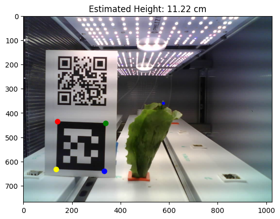
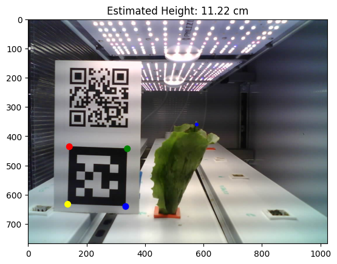

Project Overview
Overview
This project focuses on the design of an automated greenhouse that uses image-based estimation to index each plant's information over time. We also record other metrics and sensors to ensure a beneficial growing environment. Our long-term goal is to make the greenhouse responsive to the current states of the plants, fully autonomously.
Importance
Aquaponics is an expanding technique for modern environments, and a logical next step is to implement engineering methods to automate it. We are in close collaboration with the CSU Horticulture Department, which currently uses a system that ignores valuable plant data and is reliant on manual labor. Our project aims to create a more efficient system and to non-invasively measure the plants, reducing the strain of maintaining a greenhouse and providing automatic feedback.
Highlighted Goals
Our work this semester seeks to provide a foundation to realize the ultimate 'automated' goal of the greenhouse. By creating many data tracking systems, we hope to make it possible in the coming semesters to apply machine learning to respond to the plants to create an ideal growing environment.
 
